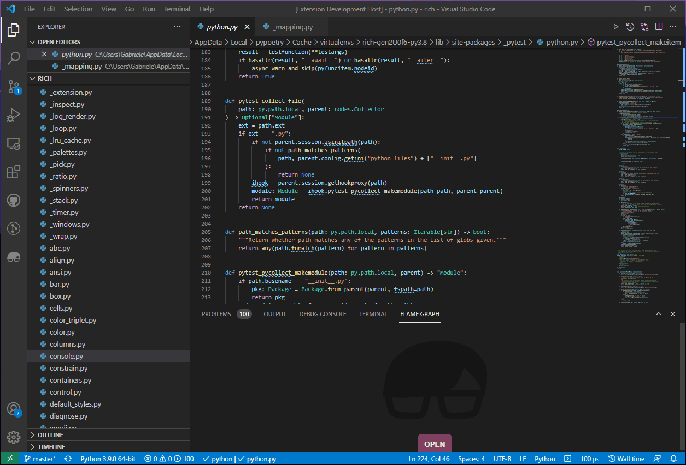
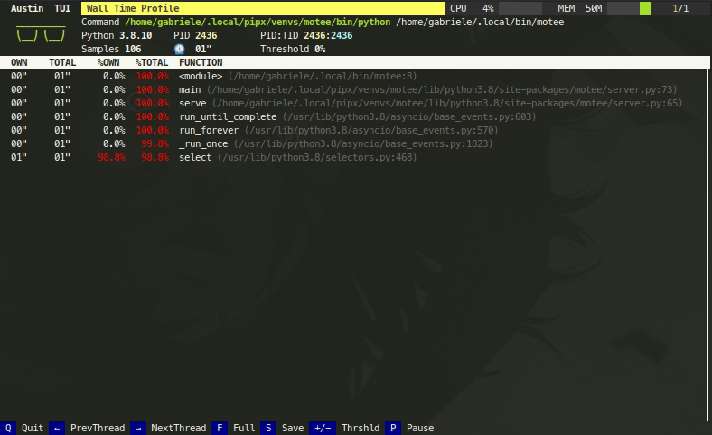
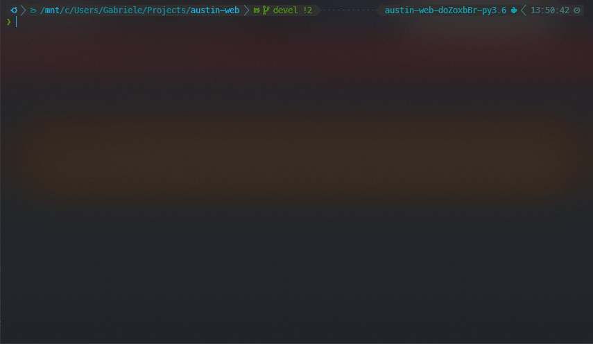
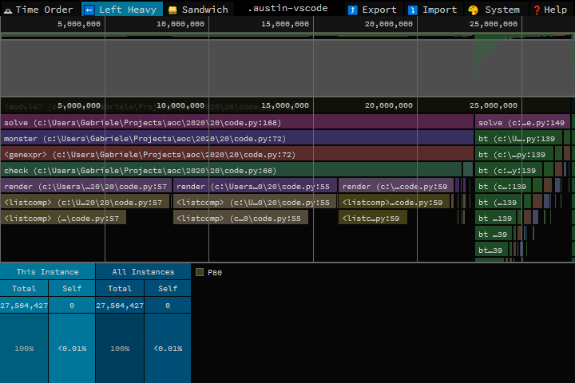

Ecosystem
Austin's MOJO output can be consumed by a number of tools,
or by your own, with the help of the [austin-python] package.
Agentic Workflows
Coding agents can profile Python code with Austin and reason about the results on their own. There are two ways to give an agent access to Austin profiles:
| VS Code MCP server | austin-query |
|
|---|---|---|
| Best for | Interactive sessions in the editor, where you and the agent look at the same flame graph | Headless use: terminal agents, scripts and CI |
| Requires | The [Austin VS Code extension] | The [austin-python] package |
| Agents | GitHub Copilot out of the box, or any MCP client, like Claude Code or Cursor | Any agent that can run shell commands |
| Output | Structured MCP tool results, plus flame graph actions | Text tables, or JSON with --json |
In both cases, the agent works from the same questions you would ask: what the
hottest functions are, who calls them, which call stacks are the heaviest, how
busy the garbage collector is, and what each asyncio task was doing.
IDE Extensions
It is easy to write your own extension for your favourite text editor. This, for example, is a demo of the Visual Studio Code extension that highlights the most hit lines of code straight into the editor

The extension opens .mojo files directly, and renders interactive flame
graphs, source-level annotations and thread breakdowns, with support for the
asyncio task view of profiles collected on CPython 3.14 or later.
MCP Server
The [Austin VS Code extension] comes with an MCP server that exposes the profile loaded in the editor to AI agents. The server starts automatically when the extension activates, and offers two kinds of tools.
The data tools let the agent read the loaded profile:
| Tool | Description |
|---|---|
get_top |
Top functions, sorted by own time |
get_call_stacks |
Process, thread and function call-stack tree, with an optional threshold to prune branches that contribute little |
get_metadata |
Source file, sampling mode, interval and total sample count |
get_gc_data |
Per-thread garbage collector time, and the functions on the stack during collections |
get_task_traces |
asyncio task trees, with each task's coroutine, location, running and total time |
The action tools let the agent show its findings in the flame graph:
| Tool | Description |
|---|---|
load_profile |
Load a profile file and open it in the flame graph view |
focus_flamegraph |
Zoom the flame graph to a call-stack or task node |
search_flamegraph |
Highlight every frame whose function name contains a term |
This way, an agent can profile your code, load the result, explain where the time goes, and point you to the relevant part of the flame graph, all within the same chat session.
In VS Code, the server is registered with the built-in MCP client, and the tools
are available in GitHub Copilot's agent mode with no configuration. For other
agents with their own MCP client, like Claude Code or Cursor, run the Austin:
Generate .mcp.json command from the Command Palette. This writes a .mcp.json
file to the workspace root that points the agent to the server. To share this
file with your team, set the austin.mcp.port setting to a fixed port before
generating it. The extension's
documentation
has all the details.
Querying Profiles
The austin.query module of the [austin-python] package answers the most
common questions about a profile, like which functions are the hottest, what the
sampled stacks are, or who calls a given function:
from austin.query import ProfileQuery
q = ProfileQuery.from_file("profile.mojo")
print(q.top(10)) # hottest functions
print(q.callers("db.py:execute")) # who calls execute
print(q.filter(thread="main").tree()) # call tree of the main thread
Every result renders as a text table when printed, and can be converted to
JSON-ready data with to_dict(). For asyncio profiles (CPython 3.14 or
later), q.tasks() shows the task trees, q.task_stacks("worker-0") where a
task was running and awaiting, and q.filter(task="worker-0") narrows any query
down to the samples in which a task was running.
The same queries are available from the command line with the austin-query
tool, which makes them easy to use for any agent that can run shell commands.
A typical session goes from an overview of the profile down to the code that
needs attention:
austin-query profile.mojo summary # mode, metrics and threads
austin-query profile.mojo top -n 20 # hottest functions
austin-query profile.mojo callers execute # who calls a hot function
austin-query profile.mojo stacks -n 5 # heaviest full stacks
austin-query profile.mojo tasks # asyncio task trees
Add --json to any command for machine-readable output. Run austin-query
--help for the syntax that selects functions and tasks, and for the suggested
workflow. Pointing an agent to austin-query --help is usually all it takes for
it to profile and analyse your code on its own:
austin -o profile.mojo python myscript.py
austin-query profile.mojo top -n 10 --json
Note
The query API and the austin-query tool are available since
austin-python 2.5.0. Install or upgrade with pip install -U
austin-python.
Austin TUI
The Austin TUI is a text-based user interface for Austin that gives you a top-like view of what is currently running inside a Python application. It is most useful for scripts that have long-running procedures as you can see where execution is at without tracing instructions in your code. You can also save the collected data from within the TUI and feed it to Flame Graph for visualisation, or convert it to the pprof format.
If you want to give it a go you can install it using pip with
pip install austin-tui --upgrade
and run it with
austin-tui [OPTION...] command [ARG...]
with the same command line as Austin. Please note that the austin binary
should be available from within the PATH environment variable in order for the
TUI to work.
Important
The TUI is based on python-curses. The version included with the standard
Windows installations of Python is broken so it won't work out of the box. A
solution is to install the wheel of the port to Windows from
this page. Wheel files
can be installed directly with pip, as described in the
linked
page.

Austin Web
Austin Web is a web application that wraps around Austin. At its core, Austin
Web is based on d3-flame-graph to display a live flame graph in the browser,
that refreshes every 3 seconds with newly collected samples. Austin Web can also
be used for remote profiling by setting the --host and --port options.
If you want to give it a go you can install it using pip with
pip install austin-web --upgrade
and run it with
austin-web [OPTION...] command [ARG...]
with the same command line as Austin. This starts a simple HTTP server that
serves on localhost by default. When no explicit port is given, Austin Web
will use an ephemeral one.
Please note that the austin binary should be available from within the PATH
environment variable in order for Austin Web to work.

Speedscope
Austin's MOJO output can be converted to the Speedscope JSON format with the
austin2speedscope utility that comes with the [austin-python] package.
If you want to give it a go you can install it using pip with
pip install austin-python --upgrade
and run it with
austin2speedscope [-h] [--indent INDENT] [-V] input output
where input is a file containing the output from Austin and output is the
name of the JSON file to use to save the result of the conversion, ready to be
used on Speedscope.

Google pprof
Austin's format can also be converted to the Google pprof format using the
austin2pprof utility that comes with [austin-python]. If you want to give it
a go you can install it using pip with
pip install austin-python --upgrade
and run it with
austin2pprof [-h] [-V] input output
where input is a file containing the output from Austin and output is the
name of the protobuf file to use to save the result of the conversion, ready to
be used with Google's pprof tools.